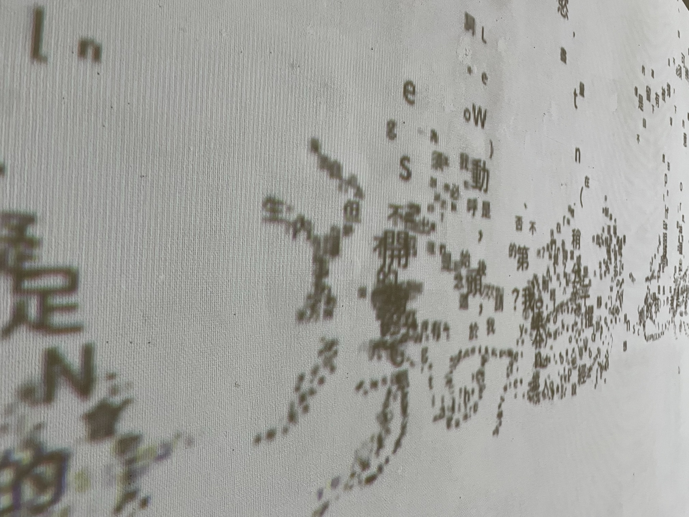
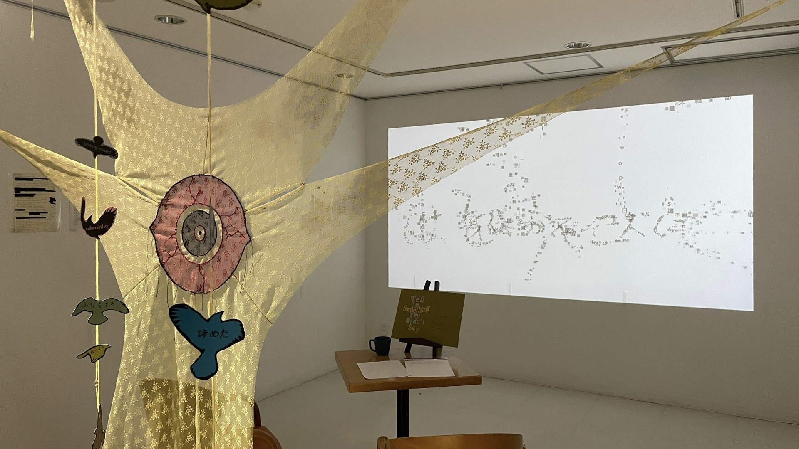
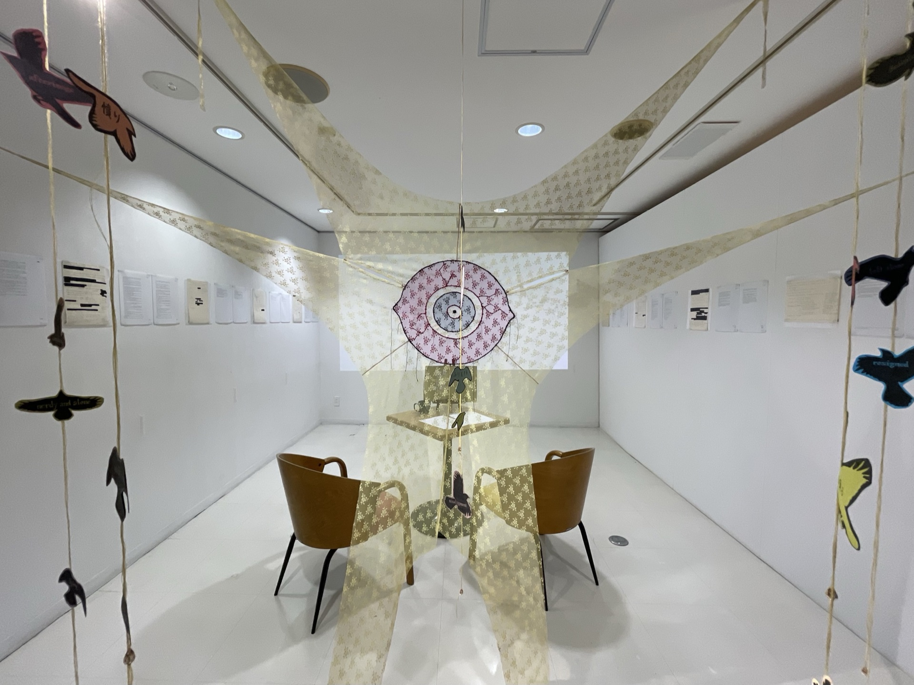
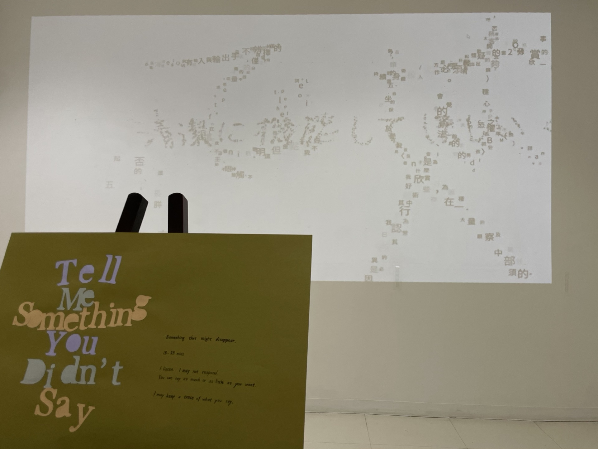
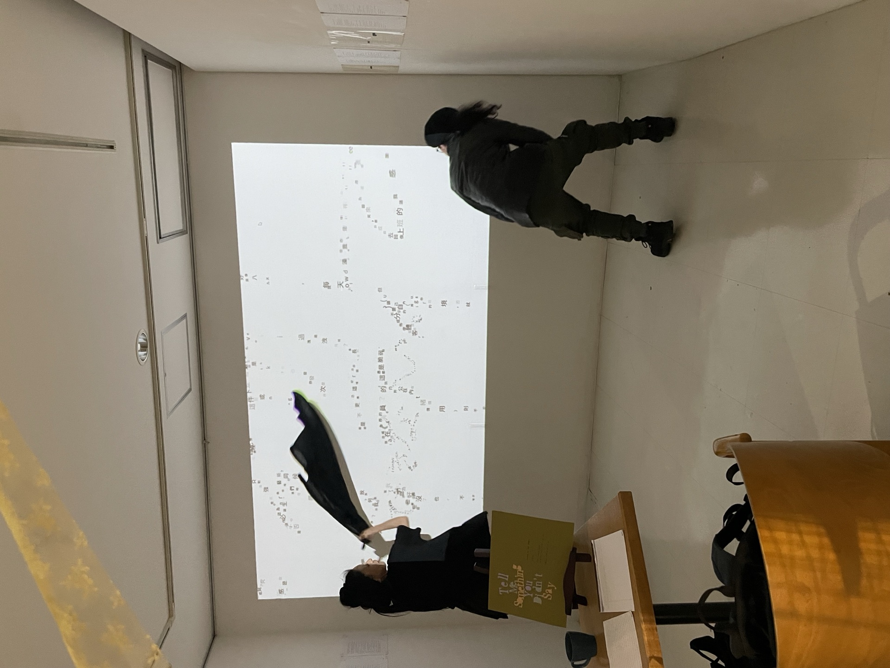

作品介紹
2026 年 4 月，藝術家周穆（Murky Ghost）於札幌天神山藝術工作室駐村期間，邀請每日造訪者講述「未曾說出口的事」，蒐集了九天份的話語。她將這些故事拆解為碎片化的關鍵字、狀態與內在矛盾，化為空間中盤旋的鴉群。
展場後方的影像作品由 MADZINE 製作，將周穆駐村期間的手寫日記轉化為「打字文字構成手寫筆畫」的即時影像。每分鐘自動換頁切換段落，當觀者走進畫面時，文字會避開人形並縮小，呈現語言「在飛行中」尚未成形或已然破碎的狀態。





關於 Calligram Video
本作品所使用的程式，是 MADZINE 為了此次展覽自行開發的工具。可將任意手寫文字轉換為「打字字符組成手寫筆畫」的即時互動影像，並支援人形互動與影片輸出。
程式功能
- 手寫照片去背 → 自動切句 → calligram 文字排版
- 依筆畫粗細分配字級，粗處放大字、細處放小字
- 多段文本分頁系統，依時間自動切換
- 即時人形偵測互動，文字避開人體並縮小
- FullHD 影片輸出（AVAssetWriter 硬體 H.264）
- 即時調整字級、密度、互動範圍等參數
技術內容
- 開發語言
- Swift + Metal + AVFoundation + Apple Vision
- Calligram 演算法
- 距離變換 + 貪婪放置 + 兩階段補洞，11 級多解析度 placement metadata
- 即時渲染
- CoreText 製作 884 字 glyph atlas（1920×1920），GPU instanced quad 採樣，mipmap 解決縮放問題
- 人形互動
- Apple Vision (VNGeneratePersonSegmentationRequest)，shader 採樣 mask gradient → 字位移外推 + 縮小
- 影片管線
- AVAssetWriter + CVMetalTextureCache 零拷貝，VideoToolbox 硬體 H.264
- 平台
- macOS 13.0+, Apple Silicon